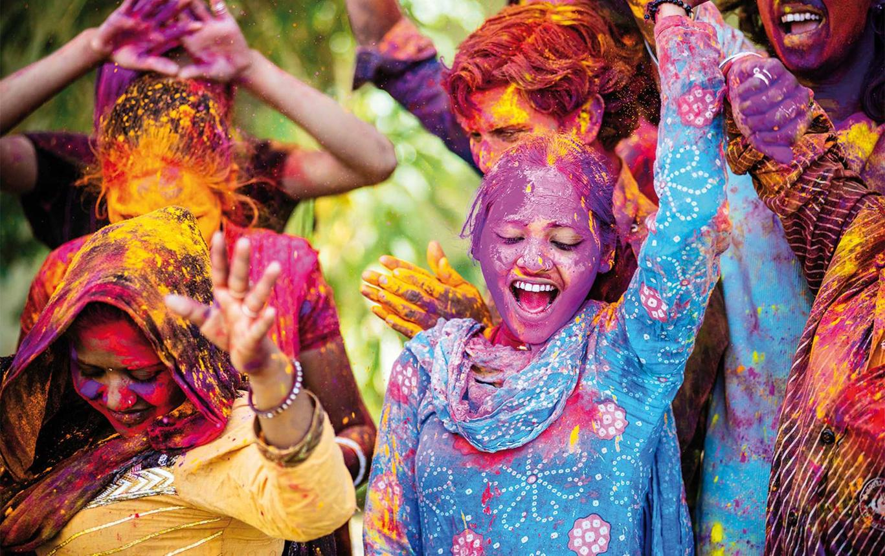
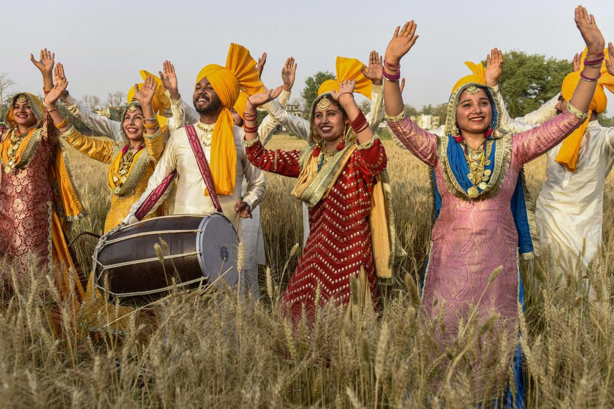
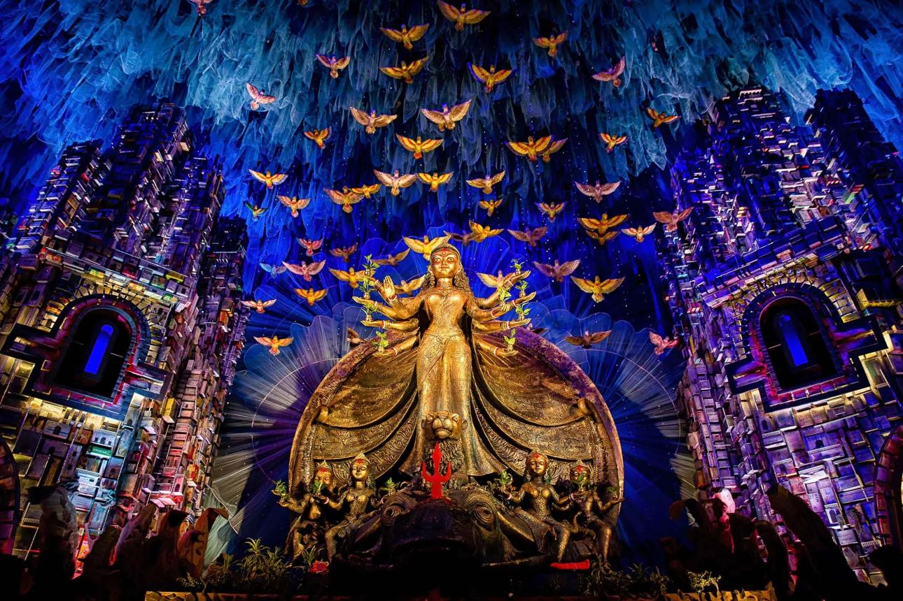
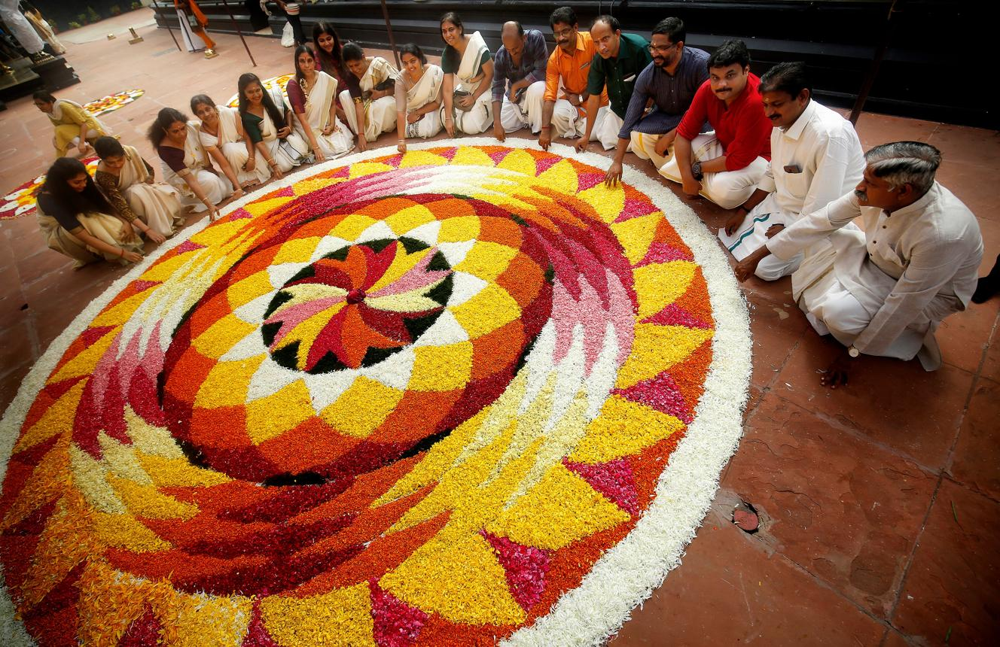
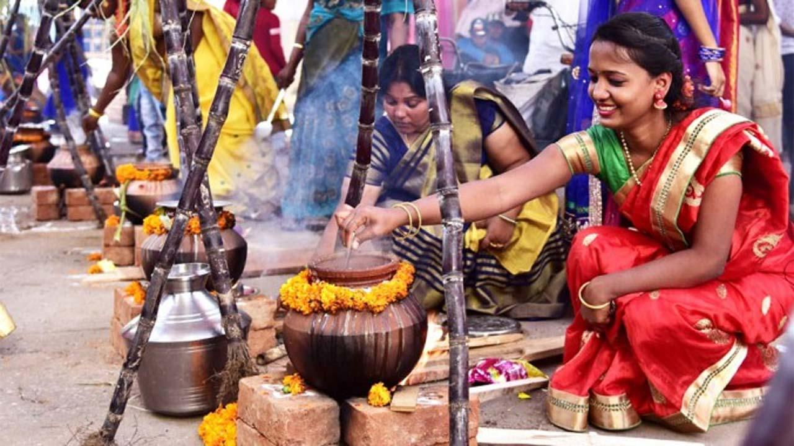

Diwali
The festival of lights, celebrated with lamps, decorations, sweets, and family gatherings.
CELEBRATIONS OF INDIA
Discover the traditions, stories, music, food, and celebrations that bring India's diverse communities together.
Explore FestivalsA LAND OF CELEBRATIONS
India's festivals reflect its rich cultural diversity. Celebrated across different regions and communities, they bring people together through traditions, rituals, music, dance, food, and shared joy.
EXPLORE THE CELEBRATIONS
Explore some of the festivals celebrated across different parts of the country.

The festival of lights, celebrated with lamps, decorations, sweets, and family gatherings.

A vibrant spring festival known for colours, music, community celebrations, and joy.

A harvest festival celebrated with gratitude, traditional food, music, and bhangra.

A major celebration honouring Goddess Durga, known for artistic pandals and cultural events.

A harvest celebration featuring flower carpets, traditional feasts, and cultural performances.

A harvest festival that celebrates nature, agriculture, and gratitude for the harvest.